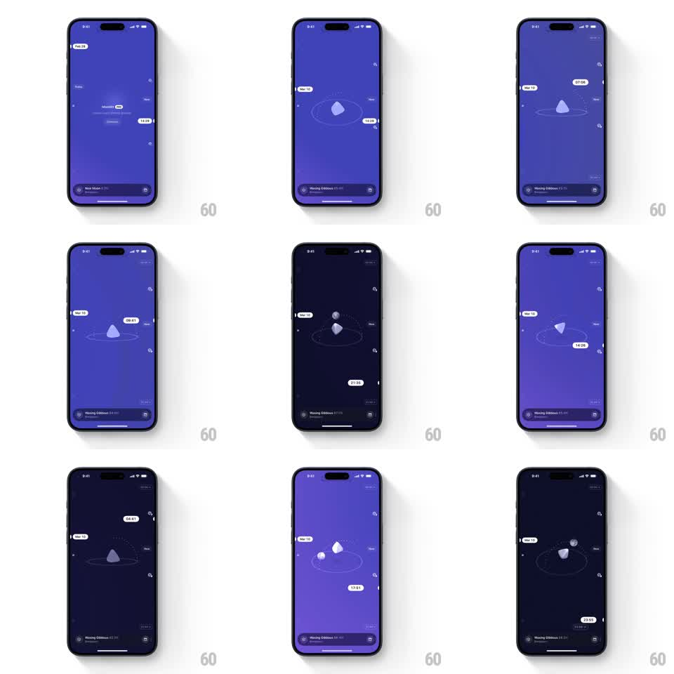

Media
Frame-by-frame

Rebuild this interaction 1:1: Moonlitt's main time scroll - dragging scrubs the clock, sliding the moon along its dotted orbit with a tracking time badge while the sky flows between purple day and dark navy night and the date pill ticks over.

Rebuild this interaction 1:1: Moonlitt's main time scroll - dragging scrubs the clock, sliding the moon along its dotted orbit with a tracking time badge while the sky flows between purple day and dark navy night and the date pill ticks over.
## Integration
Integration: stack-agnostic spec - springs given as stiffness/damping, timed motions as duration + curve; map every value to your framework and animation library of choice.
## Scene
Full-screen sky (purple day, deep navy night): the moon rides a dotted elliptical orbit at center, a small secondary body shares the orbit on the far side, floating pills show the date ("Mar 11", top-left) and the scrubbed time ("14:25", "07:04", "21:35"...), tiny planet markers dot the edges, and a bottom status pill reads the phase ("Waxing Gibbous 54.4%", "Bengaluru").
## Motion spec
Pattern: drag-scrubbed orbital clock with day-night sky.
- Drag horizontally (or vertically): drag maps to time (full width = 24h); the moon travels the orbit 1:1 with the scrub, the time badge riding beside it, text ticking live (tabular numerals).
- Sky color tweens continuously with the hour: royal purple midday, indigo dusk, near-black navy 23:00-04:00, soft violet dawn - bound to time, not gesture.
- The moon's phase shading and the status pill's phase name + percentage update live (pill text crossfades on change, 200ms).
- Crossing midnight: the date pill rolls its number (old digits slide up, new slide in, 250ms) and a subtle shooting-star streak crosses (1s, once per day change).
- Release: scrub eases to a stop (deceleration, 300ms), the badge docking beside the moon (spring ~300/20); the secondary body keeps orbiting slowly at all times (1 rev / 60s).
## Calibration
- Far side of the orbit: moon scales to 0.8 and dims (opacity 0.85) - the ellipse must read as 3D depth.
- Edge planet markers parallax +-6pt against scrub direction.
## Reduced motion
Time jumps in 1h steps with a 300ms sky crossfade; moon relocates without travel.
## Don't miss
- The bottom status pill is live data, not decoration - percentage and phase name must match the scrubbed time.
- The time badge never detaches from the moon by more than its docked offset.